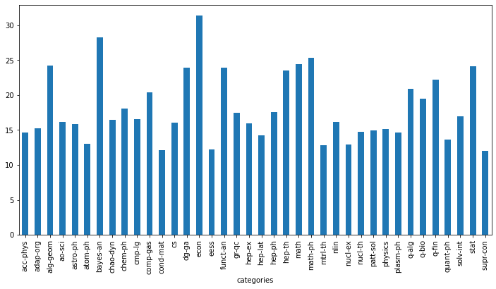

Task3任务说明
任务主题：论⽂文代码统计，统计所有论⽂文出现代码的相关统计； 任务内容：使⽤用正则表达式统计代码连接、⻚页数和图表数据； 任务成果：学习正则表达式统计；
预备知识—正则表达式 普通字符:大小写字母,数字,所有标点,一些特殊字符
字符
描述
[ABC]
匹配 […] 中的所有字符，例例如 [aeiou] 匹配字符串串 “google runoob taobao” 中所有的 a e i o u 字⺟。
[^ABC]
匹配除了了 […] 中字符的所有字符，例例如 [^aeiou] 匹配字符串串 “google runoob taobao” 中除了了 a e i o u 字母的所有字母。
[A-Z]
[A-Z] 表示一个区间，匹配所有大写字母，[a-z] 表示所有小写字母。
.
匹配除换行符（\n、\r）之外的任何单个字符，相等于[^\n\r]。
[\s\S]
匹配所有。\s 是匹配所有空⽩白符，包括换行，\S 非空白符，包括换行。
\w
匹配字母、数字、下划线。等价于 [A-Za-z0-9_]
特殊字符
特 别 字 符
描述
( )
标记一个子表达式的开始和结束位置。子表达式可以获取供以后使⽤用。要匹配这些字符，请 使用 ( 和 )。
*
匹配前面的子表达式零次或多次。要匹配 * 字符，请使用*。
+
匹配前面的子表达式一次或多次。要匹配 + 字符，请使用+。
.
匹配除换行符 \n 之外的任何单字符。要匹配 . ，请使用 . 。
[
标记⼀个/中括号表达式的开始。要匹配[，请使用[。
?
匹配前⾯面的子表达式零次或一次，或指明一个非贪婪限定符。要匹配 ? 字符，请使用 ?。
\
将下一个字符标记为或特殊字符、或原义字符、或向后引用、或八进制转义符。例例如， ‘n’ 匹配字符 ‘n’。’\n’ 匹配换⾏行行符。序列列 ‘' 匹配””, 而 ‘(‘ 则匹配 “(“。
^
匹配输入字符串串的开始位置，除非在方括号表达式中使用，当该符号在方括号表达式中使用时，表示不接受该⽅方括号表达式中的字符集合。要匹配 ^ 字符本身，请使用 ^。
{
标记限定符表达式的开始。要匹配 {，请使用 {。
|
指明两项之间的一个选择。要匹配 |，请使用 |。
限定符
字符
描述
*
匹配前面的子表达式零次或多次。例如，zo* 能匹配 “z” 以及 “zoo”。* 等价于{0,}。
+
匹配前面的⼦子表达式一次或多次。例如，’zo+’ 能匹配 “zo” 以及 “zoo”，但不不能匹配 “z”。+ 等价于 {1,}。
?
匹配前面的子表达式零次或一次。例例如，”do(es)?” 可以匹配 “do” 、 “does” 中的 “does” 、 “doxy” 中的 “do” 。? 等价于 {0,1}。
{n}
n 是一个⾮非负整数。匹配确定的 n 次。例例如，’o{2}’不能匹配 “Bob” 中的 ‘o’，但是能匹配 “food” 中的两个 o。
{n,}
n 是一个⾮非负整数。至少匹配n 次。例如，’o{2,}’ 不能匹配 “Bob” 中的 ‘o’，但能匹配 “foooood” 中的所有 o。’o{1,}’ 等价于 ‘o+’。’o{0,}’ 则等价于 ‘o*’。
{n,m}
m 和 n 均为⾮非负整数，其中n <= m。少匹配 n 次且多匹配 m 次。例例如，”o{1,3}” 将匹配 “fooooood” 中的前三个 o。’o{0,1}’ 等价于 ‘o?’。请注意在逗号和两个数之间不能有空格。
任务1初始化数据 1 2 3 4 5 6 import pandas as pdimport jsonimport matplotlib.pyplot as pltimport numpy as npimport seaborn
1 2 3 4 5 6 7 8 9 data = [] with open ("arxiv-metadata-oai-snapshot.json" , 'r' ) as f: for idx, line in enumerate (f): d = json.loads(line) d = { 'abstract' : d['abstract' ], 'categories' : d['categories' ],\ 'comments' : d['comments' ] } data.append(d) data = pd.DataFrame(data)
abstract
categories
comments
0
A fully differential calculation in perturba...
hep-ph
37 pages, 15 figures; published version
1
We describe a new algorithm, the $(k,\ell)$-...
math.CO cs.CG
To appear in Graphs and Combinatorics
2
The evolution of Earth-Moon system is descri...
physics.gen-ph
23 pages, 3 figures
3
We show that a determinant of Stirling cycle...
math.CO
11 pages
4
In this paper we show how to compute the $\L...
math.CA math.FA
None
...
...
...
...
1796906
We report on measurements of the angular dep...
supr-con cond-mat.supr-con
19 pages, LaTex, 6 PostScript figures; Author'...
1796907
The non-linear microwave surface impedance o...
supr-con cond-mat.supr-con
4 pages, LaTeX type, Uses IEEE style files, 60...
1796908
The vortex contribution to the dc field (H) ...
supr-con cond-mat.supr-con
20 pages, LaTeX type, Uses REVTeX style files,...
1796909
We show that the density of states in an ani...
supr-con cond-mat.supr-con
7 pages, 4 PostScript Figures, LaTeX, to appea...
1796910
The Ginzburg Landau theory for d_{x^2-y^2}-w...
supr-con cond-mat.supr-con
12 pages including 8 eps figs, LaTeX with jpsj...
1796911 rows × 3 columns
任务2数据处理 pandas.core.series.Series1 2 data['pages' ] = data['comments' ].apply(lambda x: re.findall('[1-9][0-9]* pages' , str (x)))
1 2 3 4 str_1 = '123 pages asdfasdfdfkxcvlkxnzclmlkamsfkmadsf asjdfajopsjpxnzpvnpzxv' x = (lambda x: re.findall('[1-9][0-9]* pages' , x))(str_1) x
['123 pages']
abstract
categories
comments
pages
0
A fully differential calculation in perturba...
hep-ph
37 pages, 15 figures; published version
[37 pages]
1
We describe a new algorithm, the $(k,\ell)$-...
math.CO cs.CG
To appear in Graphs and Combinatorics
[]
2
The evolution of Earth-Moon system is descri...
physics.gen-ph
23 pages, 3 figures
[23 pages]
3
We show that a determinant of Stirling cycle...
math.CO
11 pages
[11 pages]
4
In this paper we show how to compute the $\L...
math.CA math.FA
None
[]
...
...
...
...
...
1796906
We report on measurements of the angular dep...
supr-con cond-mat.supr-con
19 pages, LaTex, 6 PostScript figures; Author'...
[19 pages]
1796907
The non-linear microwave surface impedance o...
supr-con cond-mat.supr-con
4 pages, LaTeX type, Uses IEEE style files, 60...
[4 pages]
1796908
The vortex contribution to the dc field (H) ...
supr-con cond-mat.supr-con
20 pages, LaTeX type, Uses REVTeX style files,...
[20 pages]
1796909
We show that the density of states in an ani...
supr-con cond-mat.supr-con
7 pages, 4 PostScript Figures, LaTeX, to appea...
[7 pages]
1796910
The Ginzburg Landau theory for d_{x^2-y^2}-w...
supr-con cond-mat.supr-con
12 pages including 8 eps figs, LaTeX with jpsj...
[12 pages]
1796911 rows × 4 columns
1 2 3 data = data[data['pages' ].apply(len ) > 0 ] data['pages' ] = data['pages' ].apply(lambda x : float (x[0 ].replace(' pages' , '' )))
1 2 data['pages' ].describe().astype(int )
count 1089180
mean 17
std 22
min 1
25% 8
50% 13
75% 22
max 11232
Name: pages, dtype: int32
abstract
categories
comments
pages
0
A fully differential calculation in perturba...
hep-ph
37 pages, 15 figures; published version
37.0
2
The evolution of Earth-Moon system is descri...
physics.gen-ph
23 pages, 3 figures
23.0
3
We show that a determinant of Stirling cycle...
math.CO
11 pages
11.0
5
We study the two-particle wave function of p...
cond-mat.mes-hall
6 pages, 4 figures, accepted by PRA
6.0
6
A rather non-standard quantum representation...
gr-qc
16 pages, no figures. Typos corrected to match...
16.0
...
...
...
...
...
1796906
We report on measurements of the angular dep...
supr-con cond-mat.supr-con
19 pages, LaTex, 6 PostScript figures; Author'...
19.0
1796907
The non-linear microwave surface impedance o...
supr-con cond-mat.supr-con
4 pages, LaTeX type, Uses IEEE style files, 60...
4.0
1796908
The vortex contribution to the dc field (H) ...
supr-con cond-mat.supr-con
20 pages, LaTeX type, Uses REVTeX style files,...
20.0
1796909
We show that the density of states in an ani...
supr-con cond-mat.supr-con
7 pages, 4 PostScript Figures, LaTeX, to appea...
7.0
1796910
The Ginzburg Landau theory for d_{x^2-y^2}-w...
supr-con cond-mat.supr-con
12 pages including 8 eps figs, LaTeX with jpsj...
12.0
1089180 rows × 4 columns
1 2 3 4 5 6 7 8 9 data['categories' ] = data['categories' ].apply(lambda x: x.split(' ' )[0 ]) data['categories' ] = data['categories' ].apply(lambda x: x.split('.' )[0 ]) plt.figure(figsize = (12 , 6 )) data.groupby(['categories' ])['pages' ].mean().plot(kind = 'bar' )
<matplotlib.axes._subplots.AxesSubplot at 0x240be75c6a0>
1 2 3 4 5 6 data['figures' ] = data['comments' ]\ .apply(lambda x: re.findall('[1-9][0-9]* figures' , str (x))) data = data[data['figures' ].apply(len ) > 0 ] data['figures' ] = data['figures' ].apply(lambda x : float (x[0 ].replace(' figures' , '' )))
任务3有效信息处理 1.0.51 2 3 4 5 6 7 8 9 10 11 12 13 14 15 16 data_with_code = data[ (data.comments.str .contains('github' ) == True )|\ (data.abstract.str .contains('github' )== True ) ] pd.set_option('mode.chained_assignment' , None ) data_with_code['text' ] = data_with_code['abstract' ].fillna('' ) + data_with_code['comments' ].fillna('' ) pattern = '[a-zA-Z]+://github[^\s]*' data_with_code['code_flag' ] = data_with_code['text' ].str .findall(pattern).apply(len )
1 2 3 4 data_with_code = data_with_code[data_with_code["code_flag" ] >= 1 ] plt.figure(figsize = (12 , 6 )) data_with_code.groupby(['categories' ])['code_flag' ].count().plot(kind = 'bar' )
<matplotlib.axes._subplots.AxesSubplot at 0x24037355430>
总结
想利用github page搭建私人博客
python写的更溜了
打算制作bug文档